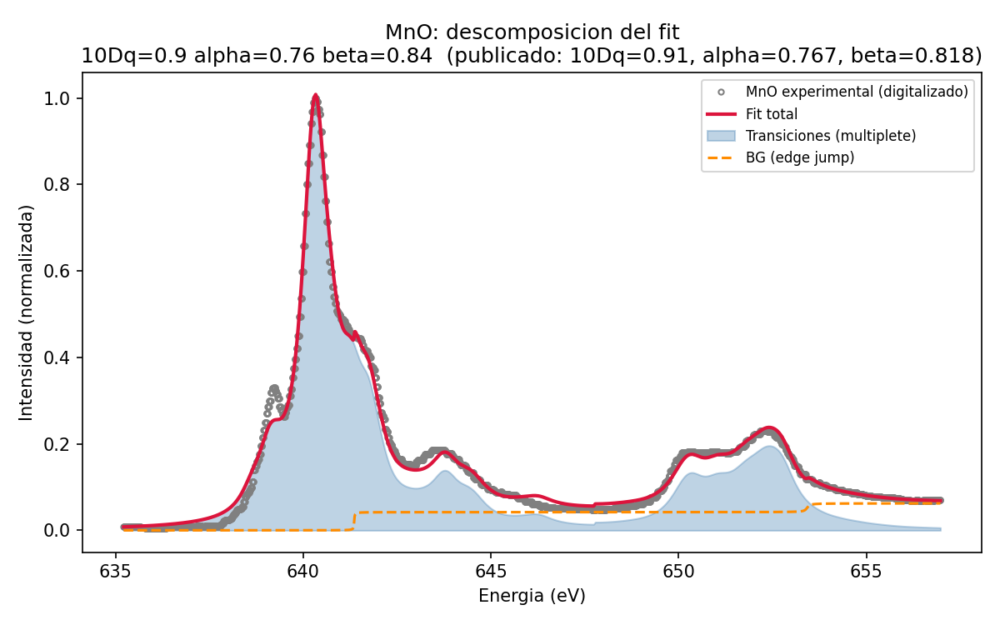
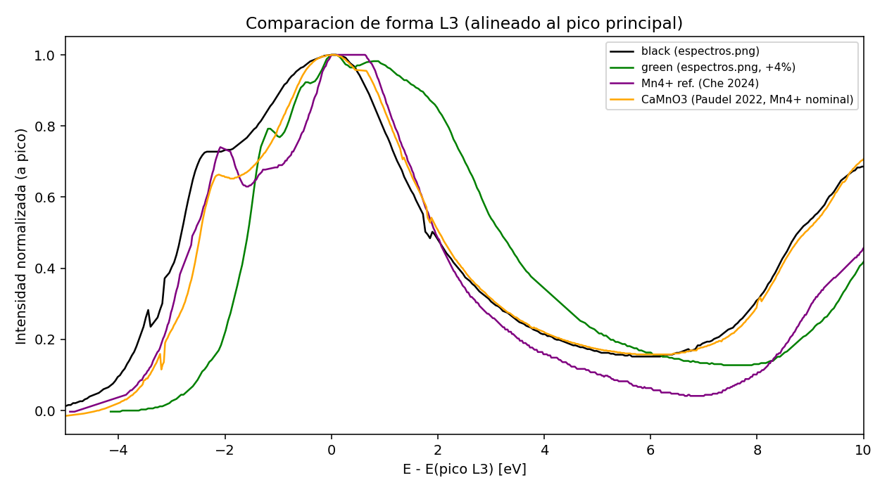

1. Objetivo, método y alcance
El proyecto desarrolla herramientas para inferir parámetros físicos del manganeso a partir de espectros de rayos X. Combina simulaciones de multipletes con Quanty, ajustes numéricos a XAS y una primera red neuronal inversa para RIXS. El trabajo con agentes quedó registrado en bitácoras, código, datos digitalizados, figuras y resultados de verificación.
Dos etapas con objetivos distintos
XAS: implementar el enfoque de grilla y mínimos cuadrados no lineales de Herrera-Yáñez et al. [1], usando Quanty mediante brixs.multiplet en lugar de BlueprintXAS/Matlab. Comparar con MnO, LiMnO2 y Mn2O3, y explorar espectros de una serie de deformación epitaxial y referencias de Mn4+. El artículo de referencia usa grilla adaptativa, no redes neuronales, y no estudia Mn4+.
RIXS: generar una biblioteca de cortes unidimensionales de pérdida de energía para Mn4+ octaédrico y entrenar una red que proponga cinco parámetros del Hamiltoniano. Esta extensión propia ya cuenta con 5000 simulaciones y un modelo entrenado; todavía no tiene validación independiente con ruido ni con datos experimentales.
Del Hamiltoniano al ajuste
El modelo inicial combina repulsión electrónica, interacción espín-órbita y campo cristalino. La grilla explora parámetros que requieren una nueva simulación: 10Dq, reducciones de Slater y, según el caso, distorsión tetragonal Ds/Dt, espín-órbita o transferencia de carga con ligandos (LMCT). En cada punto se optimizan desplazamiento energético, escala, ensanchamiento y fondo mediante mínimos cuadrados no lineales (NLLS).
La versión v1 usa ensanchamiento gaussiano global. La v2 incorpora ensanchamientos lorentzianos separados para L3/L2 y fondos de escalón por borde. También se implementó la combinación de dos sitios. El motor reutilizable adaptive_grid_fit.py refina rangos, guarda progreso y admite límites físicos explícitos; su implementación es una adaptación del enfoque publicado, no una réplica exacta.
Verificación y trazabilidad
Los tests sintéticos de autoconsistencia recuperan 10Dq = 1,400 eV en ambas versiones para un valor verdadero de 1,400 eV. Los errores de desplazamiento son 0,006 eV (v1) y 0,003 eV (v2). Esto comprueba consistencia dentro del modelo; no demuestra por sí solo que el modelo describa un material real. Los espectros experimentales se extrajeron de figuras y se verificaron por superposición con la imagen original.
Criterio central: un SSE bajo (suma de residuos cuadrados) no certifica parámetros físicos correctos. Hay que examinar estructura residual, dependencia del modelo y parámetros que alcanzan los límites de búsqueda. Los SSE solo se comparan directamente cuando usan los mismos datos y procesamiento.
2. XAS: comparación con compuestos de referencia
Se digitalizaron las curvas de las figuras S4/S5/S6 del suplemento de [1]. MnO es el caso con mejor acuerdo cuantitativo; los otros dos muestran límites de identificación de parámetros y de la aproximación física.
| MnO: parámetro | Publicado [1] | Mejor punto |
|---|
| 10Dq (eV) | 0,91 | 0,90 |
| Reducción 3d–3d (alpha) | 76,7 % | 76,0 % |
| Reducción 2p–3d (beta) | 81,8 % | 84,0 % |
MnO (Mn2+, Oh): la grilla 3D contiene 150 combinaciones. El acuerdo respalda la implementación, aunque los rangos se eligieron mediante exploraciones previas. La dispersión del mejor 5 % de la grilla es un resumen de candidatos, no un intervalo de confianza estadístico.

Figura 1. Ajuste guardado de MnO y descomposición en transiciones y fondo. Fuente: verification/grid_nlls_self_test/decompose_MnO.py.
LiMnO2 (Mn3+, D4h): la grilla ampliada de 140 puntos da 10Dq = 2,60 eV, Ds = 0,35 eV y Dt = 0,20 eV; los valores publicados son 2,43, 0,36 y 0,13 eV. El mejor punto toca los bordes de 10Dq y Dt y hay una región amplia de ajustes similares. Se obtiene una descripción razonable, pero no una recuperación única de los tres parámetros.
Mn2O3 (Mn3+, dos sitios): se combinó un sitio Oh con uno D4h que aproxima la distorsión real. El chequeo con parámetros parcialmente tomados de la literatura reproduce la forma total, pero la razón de escalas distorsionado/no distorsionado es aproximadamente 0,39 frente a 3,1 publicada. Además requiere anchos mayores. No constituye una recuperación independiente ni una determinación confiable de las poblaciones de sitios.
Resultado: validación cuantitativa más sólida en MnO; acuerdo limitado y ambigüedades documentadas en LiMnO2 y Mn2O3. Una buena superposición de curvas puede coexistir con una interpretación física incorrecta.
3. XAS: deformación epitaxial y límites del modelo
De espectros.png se extrajeron las curvas negra (0 %) y verde (+4 % de deformación). Se compararon Mn2+, Mn3+ y Mn4+, ajustes con la misma especie, alineaciones y diferencias. Dentro de los modelos explorados, ambas curvas son más compatibles con Mn3+. Esta asignación es una hipótesis apoyada por los ajustes y la comparación de formas; no determina por sí sola valencias o fracciones de mezcla de manera única.
La alineación indica un desplazamiento relativo de aproximadamente 0,8–0,9 eV. La diferencia alineada contiene lóbulos positivos y negativos; el intento de describirla con un único espectro de Mn3+ no explica su forma completa. Esto apunta a redistribución de peso espectral además del desplazamiento, sin identificar una especie adicional a partir de la resta.

Figura 2. Comparación de formas normalizadas y alineadas: curvas negra/verde y referencias de Mn4+ (CaMnO3 y Che et al. [2]). La alineación facilita comparar formas pero elimina información de energía absoluta.
Para Mn4+ se exploraron reducciones independientes de integrales, espín-órbita y LMCT. También se ajustaron CaMnO3 y una referencia de LaMn0.5Co0.5O3 de Che et al. [2]. El modelo simple de campo cristalino empuja parámetros hacia sus límites y no reproduce todos los rasgos. Esto evidencia insuficiencias en esos casos y rangos; no demuestra imposibilidad general para todos los óxidos de Mn4+.
En la curva verde, una exploración LMCT de seis puntos, con los demás parámetros del Hamiltoniano fijos, reduce SSE de 3,202 a 1,829 (43 %). El mejor punto es Delta = 2,0 eV y V = 0,60 eV. V queda en el borde superior y ambos anchos en el tope de 0,9 eV: la mejora es observada, pero persisten límites activos y no puede afirmarse ausencia de degeneración.
Errores documentados: el refinamiento de CaMnO3 llegó a cruzar un piso previsto para alpha; se incorporaron límites explícitos. Los primeros barridos LMCT para la curva negra omitieron el tope de ancho de 0,9 eV; sus SSE no son comparables bajo ese criterio hasta repetirlos. El barrido de la curva verde sí se corrigió. Un modelo de impureza con baño más general quedó pendiente.
4. RIXS: biblioteca completa y primer modelo inverso
Se generaron 5000 cortes RIXS de Mn4+ en simetría Oh con Quanty, a energía incidente fija de 643,8 eV. El muestreo Latin Hypercube usa semilla 42. Se varían 10Dq entre 1,3 y 2,6 eV y cuatro factores entre 0,4 y 1,0: F2(3d,3d), F4(3d,3d), beta para las integrales 2p–3d y zeta3d. El espín-órbita 2p queda fijo al valor Hartree–Fock.
Se separaron F2 y F4 para explorar qué información aportan las excitaciones d–d. Una calibración previa de la resonancia XAS fue descartada al decidir trabajar con energía incidente fija. Sus scripts y resultados se conservan como antecedente, pero no intervienen en la biblioteca final. La energía incidente puede modificar intensidades y visibilidad de las excitaciones.
Cada espectro se guarda por separado y el manifiesto permite reanudar la generación. Se corrigió un error del nombre temporal de np.save que había producido archivos vacíos; la biblioteca se regeneró. Para entrenar se conserva pérdida de energía >= 1,0 eV y se normaliza al máximo de esa región, excluyendo el pico elástico dominante.
Entrenamiento terminado; métricas preliminares
MLPRegressor de scikit-learn, capas ocultas 256–128–64, activación ReLU y optimizador Adam. División reproducible: 4500 muestras para entrenar y 500 para evaluación (semilla 0). Se completaron 60 bloques de entrenamiento. El checkpoint final registra R2 promedio = 0,6213; no es un porcentaje de exactitud ni mide rendimiento experimental.
| Parámetro | Error absoluto medio | Unidad |
|---|
| 10Dq | 0,0475 | eV |
| F2_scale | 0,0296 | factor |
| F4_scale | 0,0338 | factor |
| beta | 0,0523 | factor |
| zeta3d_scale | 0,1815 | factor |
Fuente: mlp_checkpoint_meta.json y train_run.log. El error en zeta3d es considerable respecto de su rango de 0,6; ese parámetro queda peor recuperado. La evaluación corresponde a simulaciones de la misma distribución y fue consultada en cada bloque: se necesita una prueba independiente antes de afirmar capacidad de generalización.
Pendiente, no ejecutado para este informe: probar nuevas simulaciones y ruido con rixs_test_predictions.py, comparar por parámetro, reconstruir espectros a partir de predicciones y contrastar con experimentos. La red se concibe como generadora de candidatos físicos, sujetos a verificación posterior.
5. Entrega, reproducibilidad y conclusiones
El repositorio reúne el material completo; este informe resume sus resultados sin reproducir todas las figuras y barridos. Los antecedentes y resultados negativos se conservan para que pueda revisarse cómo se llegó a cada conclusión.
| Material | Ubicación en el repositorio |
|---|
| Simulación XAS/RIXS, ajuste y red | code/ |
| Espectros digitalizados y origen | data/experimental/ |
| 5000 simulaciones, parámetros y modelo | data/rixs_library/ |
| Tests, barridos, logs y figuras XAS | verification/ |
| Decisiones, errores y antecedentes | docs/sessions/; docs/reference_notes.md |
| Informe breve HTML/PDF y su fuente | docs/report/ |
| Consigna y estado actualizado | PROJECT_BRIEF.md; README.md |
Cómo revisar o reproducir
Los datos y figuras guardados permiten revisar la evidencia sin volver a simular. docs/REPRODUCIBILITY.md describe el entorno, los comandos de generación del informe y los puntos de entrada de las verificaciones. Quanty para Windows está en quanty_win/. El código científico requiere Python, brixs.multiplet y sus dependencias; la reproducción completa en un entorno limpio todavía no se certificó.
Para XAS, empezar por los tests de autoconsistencia y los scripts de cada compuesto en verification/. Para RIXS, los datos y el modelo están guardados. Generar la biblioteca puede tomar horas; el entrenamiento reanuda un checkpoint, por lo que volver a ejecutarlo no inicia un modelo nuevo.
Conclusiones y próximos pasos
Se obtuvo un sistema reutilizable de ajuste XAS con acuerdo cuantitativo en MnO y limitaciones explícitas en sistemas más complejos. La serie de deformación es compatible con Mn3+ bajo las comparaciones realizadas, sin una asignación única demostrada. El trabajo identificó cómo el ensanchamiento, los fondos y los límites de grilla pueden ocultar deficiencias del modelo físico.
La extensión RIXS ya produjo una biblioteca completa y un primer modelo inverso, con recuperación desigual de los cinco parámetros. El siguiente paso acordado, después de entregar esta documentación, es su validación independiente. También quedan pendientes repetir los barridos LMCT afectados, ampliar V para la curva verde y mejorar la geometría de Mn2O3.
Referencias y fuentes
[1] Herrera-Yáñez et al. Fitting Multiplet Simulations to L-Edge XAS Spectra of Transition Metal Complexes Using an Adaptive Grid Algorithm. Inorganic Chemistry 62 (2023), 3738–3760. Artículo y suplemento ic2c02830_si_001.pdf conservados en la raíz.
[2] Che et al. Operando Soft X-ray Absorption of LaMn1-xCoxO3 Perovskites for CO Oxidation. ACS Catalysis 14 (2024), 11243–11251. DOI: 10.1021/acscatal.4c03259. Artículo y suplemento cs4c03259_si_001.pdf en la raíz. Referencia adicional de CaMnO3: imagen provista paudel2022_2.png; procedencia documentada en las bitácoras.
Repositorio: https://github.com/joaquingajst/mn-xas-multiplet-fit